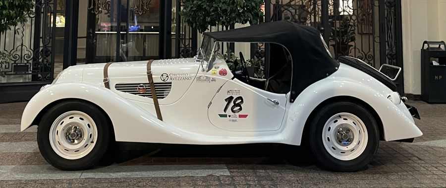
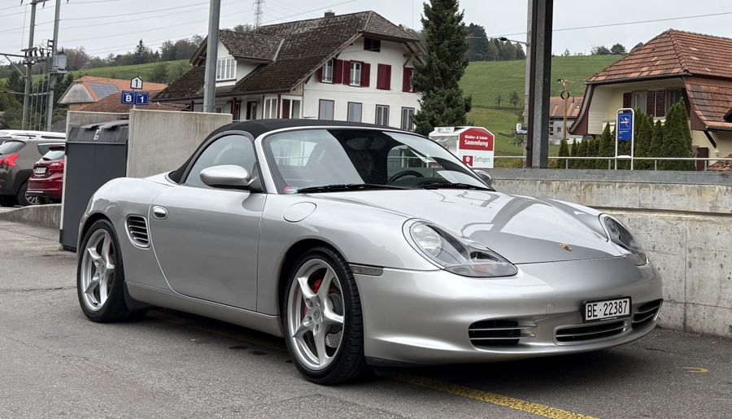

Anlass · Jubiläum
Geschenk Hochzeitstag: mit Fahrtwind zum gedeckten Tisch
Ein Geschenk zum Hochzeitstag darf nach Jahren noch einmal richtig überraschen. Mit einer kuratierten Oldtimer-Ausfahrt ab Thun oder Bern verbinden Sie das besondere Gefühl eines historischen Automobils mit einem entspannten Freitags-Lunch im Landgasthof.
Eine Überraschung ab der eigenen Haustür
Statt selbst durch den Verkehr zu steuern, beginnt der Ausflug schon beim Einsteigen vor dem Haus. Über ruhige Nebenstrassen durch das Gürbetal, das Emmental oder rund um den Thunersee geht es zu einem ausgewählten Gilde-Restaurant. Selbstfahren ist ausgeschlossen – Sie geniessen einfach den Moment.
Ablauf
In drei Schritten zur Ausfahrt
-
1
Abholung
Treffpunkt beim Hotel Bellevue Palace in Bern oder am Rathausplatz in Thun (Restaurant Krone). Auf Wunsch holen wir Ihren Gast zu Hause ab.
-
2
Ausfahrt
Auf dem Beifahrerplatz geht es über schöne Landstrassen durchs Emmental, Gürbetal oder Oberland.
-
3
Einkehr und Rückfahrt
Mittagessen in einem ausgewählten Gilde-Restaurant, danach gemütliche Rückfahrt nach Hause.
Die Fahrzeuge
Vier Automobile, vier Charaktere
Sie wählen Ihr Fahrzeug bei der Anfrage, nach Verfügbarkeit. Alle werden von ihrem Halter gefahren und gepflegt.

Porsche 356 B Coupé

Peugeot 203 C

Porsche Boxster S 3.2
Gut zu wissen
Häufige Fragen
Haben beim Geschenk zum Hochzeitstag zwei Gäste Platz?
Ja, im Peugeot 203 C: Dort haben bis zu drei Gäste Platz. Im Sbarro BMW 328, im Porsche 356 B und im Porsche Boxster S fährt jeweils ein Gast mit.
Wann sind die Ausfahrten zum Hochzeitstag möglich?
Die Ausfahrten finden freitags statt, ab Bern oder Thun. Um 11:30 Uhr sind wir im Restaurant, das Essen beginnt zwischen 11:45 und 12:00 Uhr.
Was passiert, wenn am Freitag schlechtes Wetter herrscht?
Wir fahren bei jedem Wetter. Eine Verschiebung wegen Wetter ist nicht vorgesehen.
Kann ich den Ausflug als Gutschein überreichen?
Ja, wählen Sie im Konfigurator einfach «Als Gutschein anfragen». Sie erhalten das PDF per E-Mail.